Other languages: Français
Verticality, chequerboard, mosaic and chessboard
By Anibal Edelberto Amiot — Published September 3, 2026 · translated from the French
A vertical axis keeps returning in the vocabulary this project brings into play — the rod of the caduceus, the Pythagorean gnomon, the jester's bauble. It is worth pausing on this axis for its own sake.
The chessboard
This number, 64, appears elsewhere in this project by an entirely independent route. The chapter devoted to the transcription into Yi King hexagrams groups the 256 admissible colourings of the ansate cross of order 6 into 64 magic squares of order 12 — a grouping verified exhaustively, square by square. The book presents this result in the visual form of two chessboards: one of 8×8 squares, each bearing a square of order 12, the other of 16×16 squares, each bearing a square of order 6 — 64 on one side, 256 on the other, laid out side by side like two game boards.
That the 256 admissible colourings of the ansate cross group into exactly 64 magic squares of order 12 is no coincidence: it is a direct and verified consequence of the construction itself (each square of order 12 groups exactly 4 colourings of order 6, so 256 ÷ 4 = 64, mechanically, without exception). The link with the Yi King, on the other hand, goes beyond a mere coincidence of count: the 64 hexagrams were arranged, traditionally since Antiquity and under the legendary authority of Fuxi, in the form of a square table of 8×8 — a true chessboard, not merely sixty-four objects that would lend themselves to one after the fact. It is this same square table, rediscovered much later, that astonished Leibniz when he recognised in it his own binary numeration, already present. That this number, 64, is also the number of squares on a chessboard owes less to coincidence than to pure arithmetic: 64 is a perfect square (8²), and that is the only way to lay out sixty-four elements in a regular square. The chessboard therefore invents nothing in this respect — it illustrates, like Fuxi's table, the only square form possible for this number, not a choice that could have fallen elsewhere.
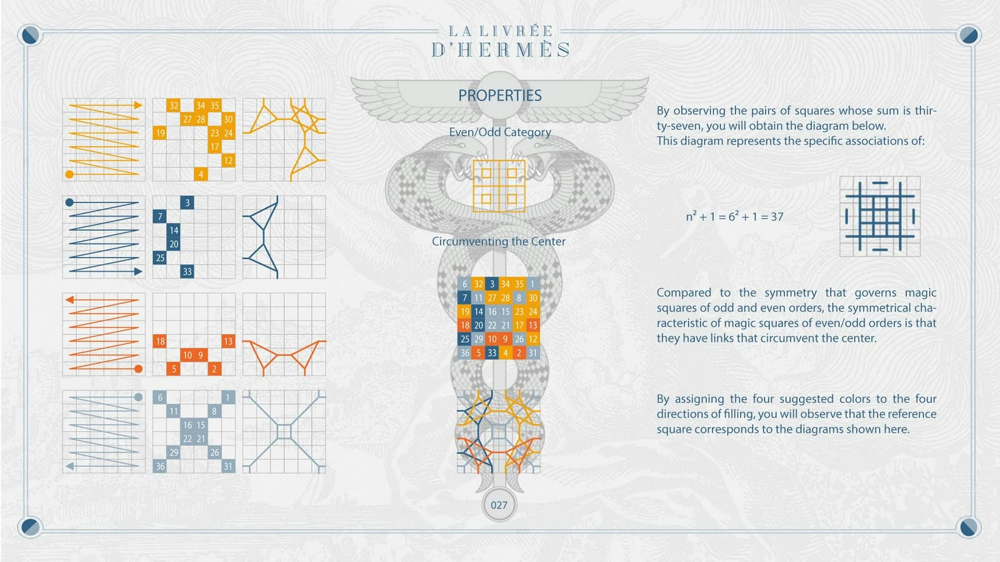
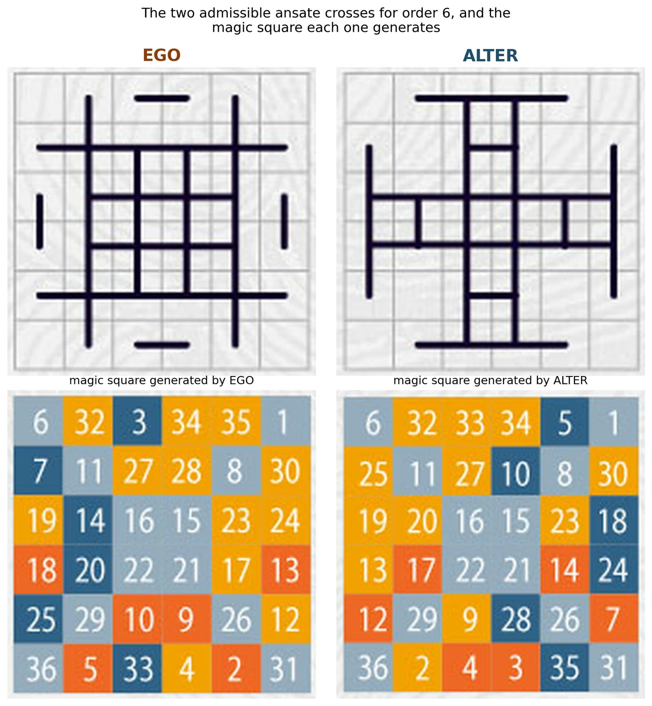
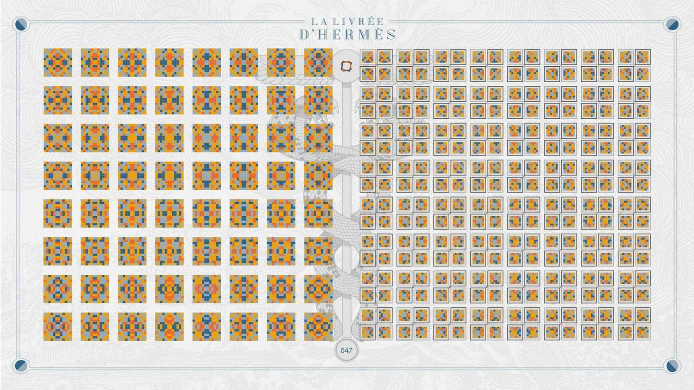
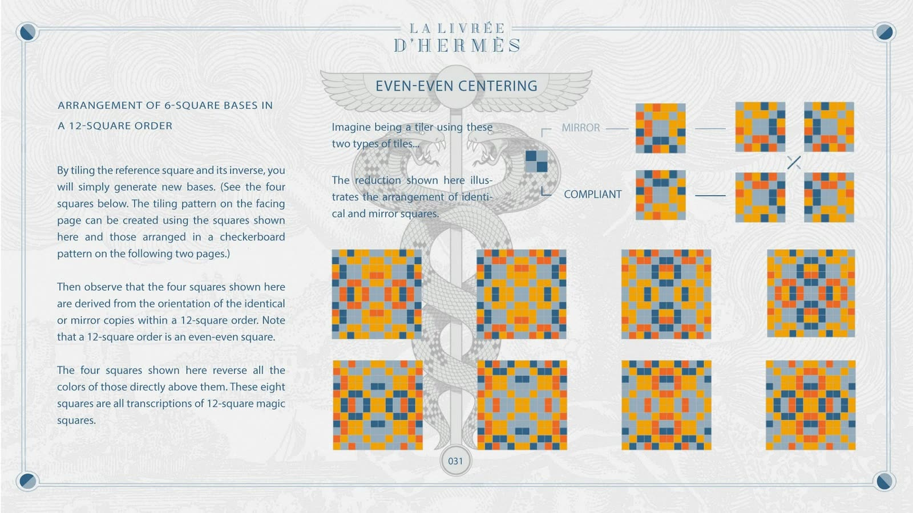
Verticality as structure, not only as image
There is more than a coincidence of number in this chessboard: there is a verticality at work in it as a principle of construction, and not only as a metaphor. The so-called “chronological” ordering of the 64 hexagrams, as this project practises it, assigns the heaviest binary weights (32, 16, 8) to the upper trigram and the lightest weights (4, 2, 1) to the lower trigram — a hierarchy of value that descends from the top to the bottom of the figure, exactly as the axis that organises the ansate cross gives rise, in the square of order 6, to an axial symmetry from a single centre.
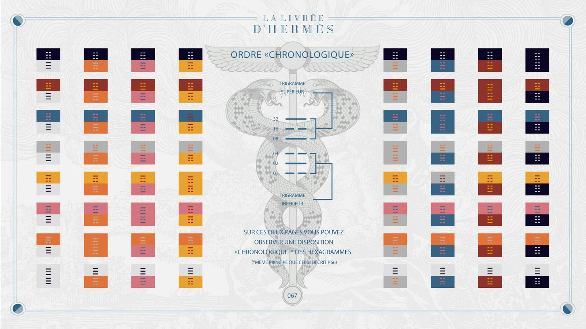
This same passage from one system to the other — the ansate cross becoming a hexagram without changing its module — is what this project elsewhere calls a moult of the chameleon fabric: neither the complete loss of an envelope, like the moult of the snake, nor its doubling, like the butterfly leaving its chrysalis, but one and the same fabric changing its hue without ceasing to be the same fabric. The vertical hierarchy that ranks the binary weights from heaviest to lightest is precisely the mechanism of this moult: it is what moves the figure from a geometric register to a binary register, vertically, without a single cell changing place.
The butterfly itself is not absent from this project, merely kept at a distance from the moult proper. In Fables de Venise, Hugo Pratt conjures up an immense butterfly made of shards of coloured glass, which he names “Aurélia, the gnostic butterfly”: there, gnosis represents itself as an inexhaustible source of wisdom, offering each person, in a thousand reflections, what he wishes to see. The comparison with the chameleon fabric stops where the difference begins: Aurélia does not change, she reflects — each of her shards sends back a colour of its own to the beholder, whereas the moult really does change hue without changing fabric.
The Chinese etymology of the very title of the transcribed text joins, without our having sought it, this same image. The character yi (易) is commonly interpreted — its origin remains debated — as originally representing a chameleon, an animal that changes its appearance without changing its nature. The character jing (經), rendered here as “king”, designates for its part the warp thread of a fabric, the one that structures the cloth before the weft crosses it, and it is from this taut thread that the derived meaning of “classic” comes: a text that holds as a warp holds a fabric. The title Yi King would thus carry, in its two characters, the chameleon and the fabric — the moult and the warp — even before this project brought them together in its turn.
A third echo joins this pair — Aurélia's butterfly, the moult of the chameleon fabric — without our having had to force it: Harlequin's motley costume. The article devoted to Hanuman already presents this figure as the best-known Western embodiment of the messenger in motley livery: according to Thelma Niklaus (quoted by Richard Stamelman), Harlequin wears, in theatrical form, “Mercury's own livery”, the multicoloured costume signalling both the god's protection and the unstable temperament of those who wear it — and he holds a staff as Mercury held the caduceus. Françoise Dininman, in her reading of Guillaume Apollinaire's poem “Crépuscule” (“Naissance de "Crépuscule" ou les tours de Mercure”), explicitly identifies the poem's Harlequin with Hermes and calls him an axis mundi — a link between earth and heaven, held on the zenith–nadir axis that structures the whole text. She reads the trestle stage of the poem as a temenos, a sacred enclosure, on which this axis is played out. Harlequin's costume itself, in multicoloured lozenges, is nothing but a magic square turned through 45° — the same chequerboard, seen at a slant: a third form, alongside the butterfly and the moult, in which this project finds its own geometry already disguised as something else.
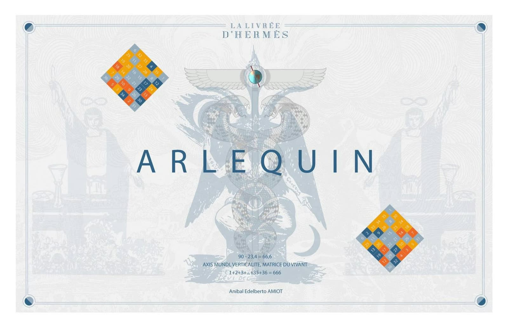
The Yi King itself gives this discrimination between high and low an almost literal formulation. The judgment of hexagram 10 (履, Lǚ, “Treading”) remarks that “the superior man discriminates between high and low”, and that this very discernment fortifies the resolve of the people — a sentence that could serve as an epigraph to this entire article, written centuries before this project made it a principle of construction.
Baphomet carries this same verticality inscribed in his own body. The gesture Éliphas Lévi gives him — one arm raised bearing the inscription Solve, the other lowered bearing Coagula — takes up the gesture of the Magician in the tarot, one hand stretched towards the sky, the other towards the earth: the same axis that organises the chessboard and the caduceus. This same vocabulary, Solve and Coagula, also names, in this project, the two readings of the ansate cross whose squares summing to 666 each encode, in its own way, the symmetry of the serpent.
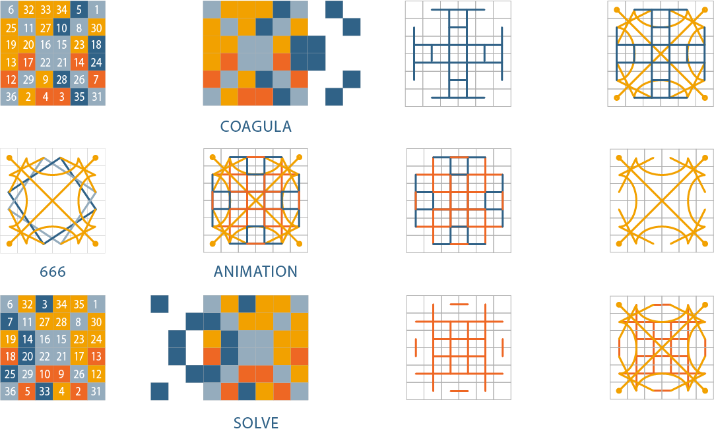
His mosaic appearance stems from his very construction: a goat's head, an androgynous body, a caduceus set before the lower belly, a torch on the top of the skull — four pieces of distinct origins assembled into a single figure, as the cells of a magic square assemble distinct colours into a single surface. The goat's head carries the most direct allusion possible to the number of the beast; the caduceus takes up, on the very body of the figure, the vertical axis that runs through this whole article.
The caduceus Baphomet carries refers back, in turn, to this project's own caduceus. Its vertical rod is not a mere support for the two intertwined serpents: it is what makes their coiling commensurable, in the original sense of symmetria — a shared module, here purely vertical, from which the two opposed curves measure themselves against each other rather than simply crossing.
The mosaic serpent
The serpent itself carries, in its scales, the same mosaic as the chequerboard and the chessboard. The Ouroboros, the serpent that bites its own tail, is described in the alchemical tradition as an androgynous being born of the fusion of two antinomic serpents — a kinship that links it directly to the caduceus, attribute of the divine Greek messenger, around one and the same question: how can absolutely opposed scales be reconciled in a single surface? This is exactly the question of symmetria, already met with regard to Baphomet's rod, posed this time on the serpent's very skin.
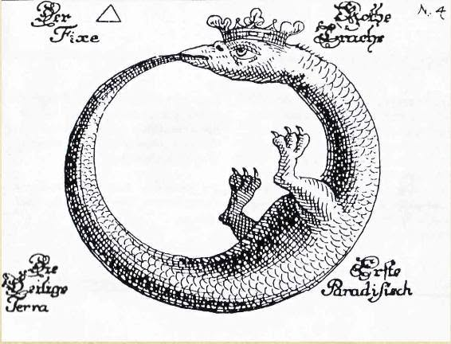
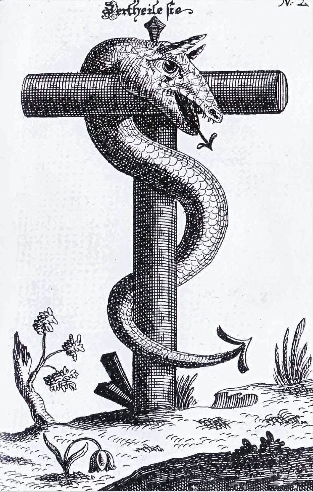
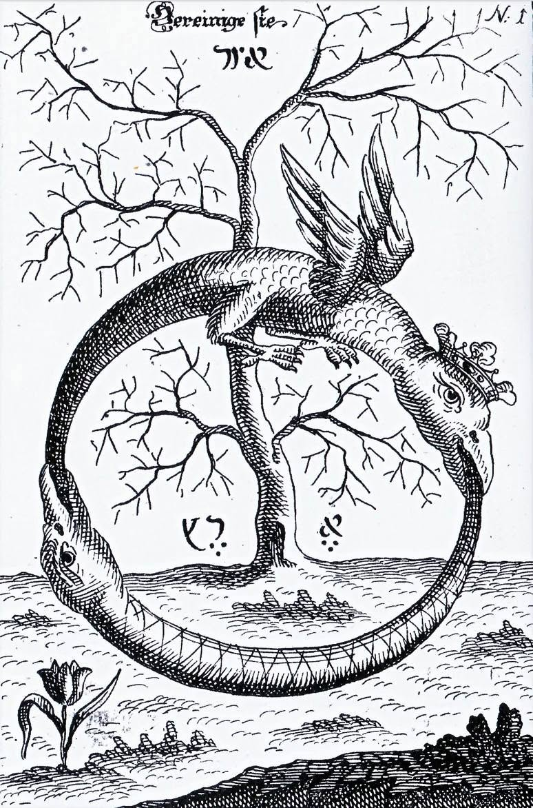
Three plates from the Donum Dei (Erfurt, 1735) — public domain. The second shows a single serpent coiled on a cross-shaped stake, a figure close to the caduceus reduced to a single body.
A German treatise of 1735, the Donum Dei, answers this question with an image rather than a formula: two dragons — one crowned and winged, the other bare — each coil upon themselves before one devours the other to form a single being, “the most fixed of the fixed, which pierces all things”. The biblical text knows a neighbouring figure, reduced to a single serpent carried on a pole rather than coiled upon itself: the brazen serpent that Moses raises in the wilderness, “that whoever believes may have eternal life through him” (John 3:14–15) — the same vertical that already carries, elsewhere in this project, the high priest's breastplate and its skein of meanings around the Hebrew word for “serpent”.
On the two chessboards of the chapter devoted to this transcription — the one of 64 squares of order 12, the one of 256 squares of order 6 — this internal verticality is what makes the ordering possible: it is not a mere decorative tiling, it is an axis of reading, from the top to the bottom of each figure, that orders the whole grid.
A chain of vertical instruments
Before following this chain, we must say what the mosaic pavement itself is, since the title of this article names it without having yet introduced it. It is the flooring that occupies the centre of a Masonic lodge: alternating black and white squares, whose number varies according to the rite. Black and white are not colours there but values — the union of all light, its absence — and the pavement thus figures the duality of the manifested world, held in a single floor rather than resolved. It is matched, in the architecture of the lodge, by the starry vault that adorns the ceiling: the chequerboard is the world below, differentiated; the vault is the world above, one. It is a chequerboard that remains fixed in its duality — black stays black there, white stays white, from one end of the floor to the other — unlike this project's chessboard, where the same square changes value according to the vertical axis that reads it.
This black and this white are already, without anything needing to be added, a binary pair — the same two-term opposition as that of the solid and broken lines of the Yi King, yang and yin, 1 and 0. In this sense the mosaic pavement echoes, in its static way, the binary moults of the chameleon fabric met above: both systems rest on an alternation of two values, the one frozen square by square in space, the other sliding from one register to another along the vertical axis. The chequerboard and the moult each express, in its own medium, the same base-two arithmetic.
The same chapter has the axis followed by a chain of terms, set out one below the other like the rungs of a single ladder: axis, verticality, plumb line, right angle and square, Pythagoras, Saturn — time —, pendulum, chessboard. This is a progression proper to this project, not a lineage attested by a third-party source, but each of the links taken separately is firmly anchored.
The plumb line and the set square are the very tools by which a mason materialises the vertical and the right angle on a building site — the two instruments that give the mosaic pavement its straightness before symbolism takes hold of it. Pythagoras, whose gnomon appeared above, supplies the theorem that links the right angle to measure. Saturn, in classical astrology and alchemy, is the planet of time, of lead and of heaviness — the slowest, the heaviest, the one that governs falling and therefore the very direction the plumb line makes visible. The pendulum is nothing but this same plumb line set in motion: a mass that swings to either side of a fixed vertical axis and which, once regulated, becomes an instrument for measuring time — closing the loop back to Saturn. The chessboard, finally, closes the chain upon itself: it is the grid in which this verticality, once established, comes to be inscribed and ordered.
Read in this way, the chain does no more than make explicit, tool by tool, what the article has shown in the form of an image: the same axis that the ansate crosses generate also carries, very concretely, the builder's plumb line and the clockmaker's pendulum.
The chessboard as a sieve
It remains to say how this verticality, once established, becomes visible in the chessboard itself rather than remaining an added image. Dininman's temenos, introduced above in connection with Harlequin, offers the model: this project's chessboard works in the same way — a temenos within which a second temenos nestles, square after square, and where the chronological ordering of the figures acts as a sieve — an instrument that retains one form and lets the others through, revealing by this sorting the same verticality that organises each figure taken on its own.
From the number of the beast to the measure of the angel
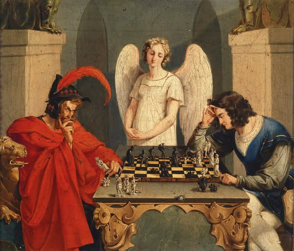
The Revelation of John explicitly calls only two quantities in the whole book a “number” or a “measure of a man” — the only two occurrences of this precise expression it contains. The first is well known: “it is the number of a man, and his number is six hundred and sixty-six” (Revelation 13:18) — 666, which is also, independently of any esoteric reading, the magic constant of this project's square of order 6 (6 × 111 = 666). The second is much less so: the wall of the New Jerusalem measures “a hundred and forty-four cubits, the measure of a man, which is also the measure of an angel” (Revelation 21:17) — 144, the very number this project obtains by merging the red and blue colours of the ansate cross on order 12 (three homogeneous forms of 48 cells: 3 × 48 = 144).
The biblical text thus passes, through this rare doublet and through it alone, from the number of the beast to the measure of the angel — two ends of one and the same moral axis, carried by the same kind of number. What this project does is to turn this textual doublet into a geometric doublet: the passage from 666 to 144 is not an arbitrary leap from one order to another; it follows the same vertical hierarchy described above — the one that ranks the binary weights from heaviest (32, 16, 8) to lightest (4, 2, 1) — applied this time to the passage from order 6 to order 12. Extracting verticality from the binary, in this project, means precisely this: bringing out, in the passage from one constant to the other, the same axis that the mosaic pavement brings out elsewhere through the image rather than through calculation.
Sources mentioned: Revelation 13:18, 21:17; John 3:14–15; symbolism of the mosaic pavement after several concordant Masonic sources; traditional square arrangement of the 64 hexagrams attributed to Fuxi, and its comparison with binary numeration by Leibniz; etymology of 易 (yi, chameleon) and 經 (jing, warp thread); Hugo Pratt, Fables de Venise; T. Niklaus, Harlequin Phoenix, or the Rise and Fall of a Bergamask Rogue (Bodley Head, 1956), quoted by Richard Stamelman; Françoise Dininman, “Naissance de "Crépuscule" ou les tours de Mercure”, Que Vlo-Ve, issues 6–7; judgment of hexagram 10 (履, Lǚ) of the Yi King; engraving of Baphomet, Éliphas Lévi (19th century, public domain); Donum Dei (Erfurt, 1735), public domain; “Checkmate”, Friedrich August Moritz Retzsch, 1831 — public domain.
For the notions used here — livery, verticality — see the project lexicon. This article was first published in French: Verticalité, damier, mosaïque et échiquier.